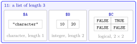

List¶
Definition¶
A list is an ordered collection of elements that may differ in type, length and structure. An element of a list can be a single value, a vector, a matrix, a data frame or another list, so lists can be nested.
list(...) creates a list from its arguments. The elements can be named at construction, as in list(A = 'character', B = c(10L, 20L)), or afterwards with names(l) <- c(...); names(l) returns the names. length(l) is the number of top-level elements.
Interpretation¶
An atomic vector is a row of cells that all hold the same kind of value; a list is a row of compartments, each of which can hold anything. This makes lists the natural container for data that do not fit into one rectangular table: a name, a few numbers and a matrix that belong together.

The figure is the list of Examples 1 and 2. Compartment A holds the character string "character" (length 1), B the integer vector 10 20 (length 2) and C a logical matrix. Each element keeps its own type and shape; nothing is converted, unlike c(), which would turn everything into one type (type coercion). The names above the compartments are what names() returns.
When a list is printed, each element is introduced by its position in double brackets, [[1]], or by its name, $A. These labels show the two ways of taking elements out of a list, with [[ ]] or $, explained in Single and Double Brackets.
Lists are the general structure behind several later ideas. A data frame is a list whose elements are columns of equal length, and a function that has to return several results at once usually returns them in a list (return values).
A common mistake is to collect different things with c() instead of list(). c('a', 10L, TRUE) gives the character vector "a" "10" "TRUE" and loses the numbers and the logical value; list('a', 10L, TRUE) keeps all three as they are.
Key Results¶
- The elements of a list can have different types, lengths and structures, including other lists.
list()never converts its elements to a common type.- Names can be given at construction (
list(A = …)) or later withnames(l) <- …. length(l)counts the top-level elements, not the values inside them.- A printed list labels its elements
[[1]],[[2]], … or$name.
Examples¶
1. A list of three different objects.
l1 <- list('character', c(10L, 20L),
matrix(c(FALSE, FALSE, TRUE, FALSE), nrow = 2, ncol = 2))
l1
#> [[1]]
#> [1] "character"
#>
#> [[2]]
#> [1] 10 20
#>
#> [[3]]
#> [,1] [,2]
#> [1,] FALSE TRUE
#> [2,] FALSE FALSE
#>
length(l1)
#> [1] 3
The list holds a character vector of length 1, an integer vector of length 2 and a logical matrix with four cells, yet its length is 3.
2. Naming the elements.
l1 <- list(A = 'character', B = c(10L, 20L),
C = matrix(c(FALSE, FALSE, TRUE, FALSE), nrow = 2, ncol = 2))
names(l1)
#> [1] "A" "B" "C"
l2 <- list('character', c(10L, 20L), 1.5)
names(l2) <- c('A', 'B', 'C')
l2
#> $A
#> [1] "character"
#>
#> $B
#> [1] 10 20
#>
#> $C
#> [1] 1.5
3. A nested list and str().
course <- list(name = "Programming", grades = c(7.5, 8),
extra = list(week = 1L, done = TRUE))
str(course)
#> List of 3
#> $ name : chr "Programming"
#> $ grades: num [1:2] 7.5 8
#> $ extra :List of 2
#> ..$ week: int 1
#> ..$ done: logi TRUE
str() shows the structure compactly: one line per element with its type, and the inner list indented one level deeper.
4. Pitfall: c() is not list().
c('a', 10L, TRUE)
#> [1] "a" "10" "TRUE"
length(c(c(10L, 20L), 'a'))
#> [1] 3
length(list(c(10L, 20L), 'a'))
#> [1] 2
c() converts to character and flattens the inner vector, while list() keeps the integer vector as one element of type integer.
Prerequisites¶
Related Concepts¶
Sources¶
- Programming for EOR · Week 1
- Lecture script Data Types and Structures (Part 2), part "Lists"
Aliases: list in R, list(), named list, nested list, recursive vector, names() Keywords: elements of any type, named elements, nested lists
Last updated: 10 November 2026 16:43
ListData FrameSingle and Double BracketsReturn ValuesAtomic VectorAtomic Data TypesMatrices in RType Coercion